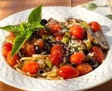

Trattoria Verona

At Trattoria Verona, every meal is a journey to the heart of Italy. Known for its comforting, authentic flavors, the restaurant brings classic Italian dining to life with a menu that celebrates quality ingredients and traditional cooking techniques. From the first bite, guests are greeted by the aroma of slow-cooked sauces, freshly baked bread, and wood-fired pizzas that fill the rustic, warmly decorated space with a welcoming charm.
The menu highlights handmade pastas crafted daily, including creamy fettuccine, delicate ravioli, and classic spaghetti, each paired with rich sauces made from scratch using ripe tomatoes, fresh herbs, and high-quality olive oil. Guests can also enjoy wood-fired pizzas topped with fresh mozzarella, savory cured meats, and seasonal vegetables, offering the perfect combination of crisp crust and melty, flavorful toppings.
For those seeking heartier options, risottos cooked to creamy perfection, slow-roasted meats, and traditional antipasti platters are available, showcasing everything from marinated olives and fresh cheeses to prosciutto and seasonal vegetables. Each dish is thoughtfully prepared to capture the warmth, depth, and simplicity that makes Italian cuisine beloved worldwide.
Whether it’s a family dinner, a romantic evening, or a gathering with friends, Trattoria Verona offers a cozy, inviting atmosphere that pairs beautifully with hearty Italian flavors. Every visit promises a relaxed and satisfying experience, leaving guests eager to return for more of Italy’s timeless favorites.
Trattoria Verona — where every dish is a taste of Italy
Find a Location Near You
- Downtown Piazza
521 Olive Street
Verona Heights, CA 90512 - Riverside Quarter
880 Bella Vista Avenue
Riverside Park, CA 90528 - Hilltop Commons
1344 Tuscany Lane
Hilltop Village, CA 90541
Popular Menus
Fettuccine Alfredo with Truffle Cream
.avif)
Rich, creamy fettuccine tossed in a velvety truffle-infused cream sauce and topped with freshly shaved Parmesan. This indulgent pasta is a customer favorite for its luxurious flavor and comforting, classic Italian taste.
>Margherita Wood-Fired Pizza
.avif)
A traditional favorite featuring a crisp, thin crust baked in our wood-fired oven, topped with fresh mozzarella, vine-ripened tomatoes, and fragrant basil. Simple, fresh, and utterly satisfying, this pizza highlights the beauty of authentic Italian ingredients.